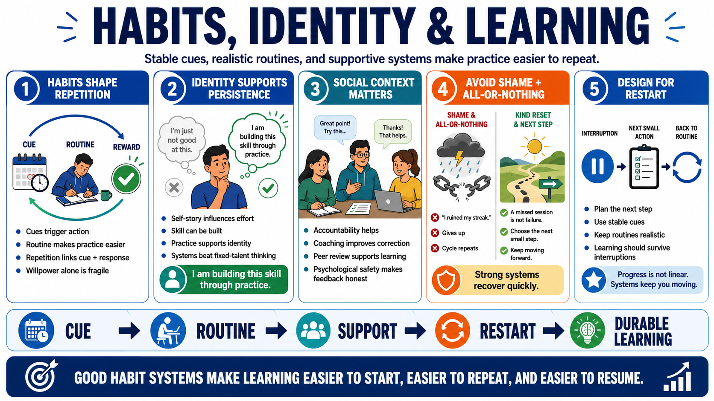

Habits, Identity, and Social Context
Connecting to LMS... Progress: in progress

Narration
Habits are repeated patterns shaped by cues, routines, and reinforcement. A habit makes behavior easier to trigger because the cue and response have been linked through repetition. For learning, this means routine matters. If practice always requires a fresh act of willpower, it is fragile. If practice is attached to a stable cue and a realistic routine, it becomes easier to repeat.
Identity and self-story can influence learning behavior. A person who says, I am not the kind of person who learns this, may stop early. A more useful story is, I am building this skill through practice. That statement does not guarantee success, but it supports persistence because it frames skill as something developed through systems rather than fixed talent.
Social context also matters. Accountability, coaching, peer review, group norms, and psychological safety at a practical level can all support learning. A team that makes practice visible and feedback normal creates different conditions from a team that treats mistakes as shameful. Social support should help people improve, not pressure them into unsafe or performative behavior.
Avoid shame-based motivation and all-or-nothing thinking. Shame may create short-term compliance, but it often hides confusion and reduces honest feedback. All-or-nothing routines break when one session is missed. Strong habit systems make it easy to restart. They connect practice to identity, cues, support, and realistic expectations, so learning survives normal interruptions.
A useful habit design question is: what should happen after the interruption? Strong routines include recovery paths. If a learner misses a session, the system should point to the next small action rather than demanding a full restart. That makes the routine more durable, because real life will always include schedule changes, fatigue, and competing responsibilities.